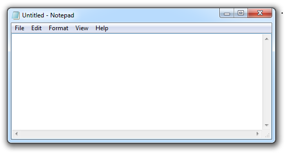
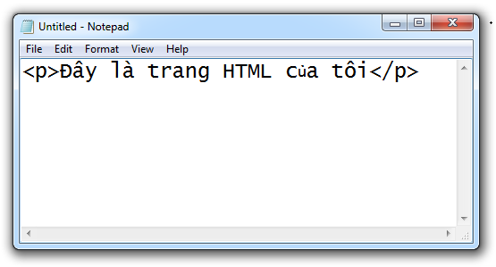
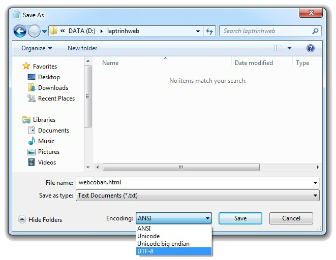
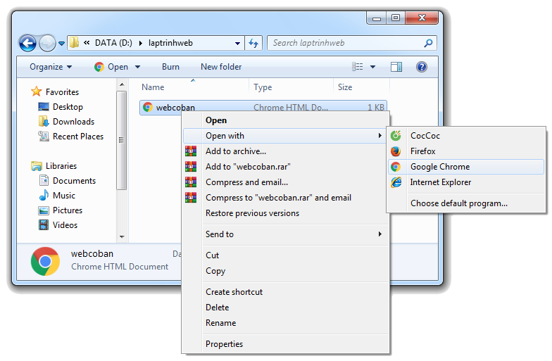
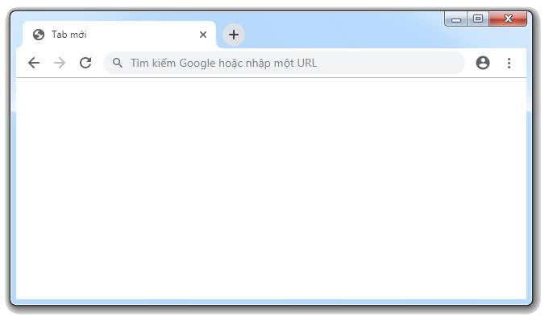
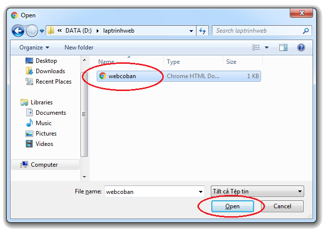
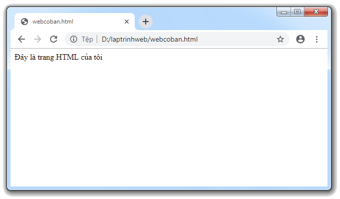

Hướng dẫn cách tạo & chạy một tập tin HTML
1) Giới thiệu công cụ soạn thảo mã HTML
- Ngày nay có rất nhiều công cụ hiện đại hỗ trợ việc soạn thảo mã HTML, ví dụ như: Adobe Dreamweaver, CoffeeCup, TextWrangler, Sublime Text, . . . . Tuy nhiên, các công cụ này thường tương đối phức tạp, chúng chỉ thích hợp với những người đã thông thạo về lập trình web, còn đối với những người mới học HTML giống như chúng ta thì tốt nhất là nên dùng các công cụ soạn thảo thuần văn bản, một mặt nó sẽ giúp ta rèn luyện kỹ năng gõ mã lệnh, mặt khác chúng ta có thể ghi nhớ được tên của từng loại thẻ.
- Mà nói đến trình soạn thảo thuần văn bản thì tôi xin giới thiệu đến các bạn một công cụ có sẵn trên máy tính cài hệ điều hành Windows, đó chính là Notepad (tùy vào phiên bản mà cách mở sẽ khác nhau, nhưng nếu các bạn đang dùng Windows 7 thì các bạn có thể mở bằng cách vào Start rồi gõ từ khóa Notepad)
2) Cách tạo một tập tin HTML
- Để tạo một tập tin HTML thì chúng ta thực hiện lần lượt các bước như sau:
- Bước 1: Mở trình soạn thảo thuần văn bản Notepad lên.

- Bước 2: Nhập những nội dung mà các bạn muốn chúng được hiển thị trên trang web.

- Bước 3: Lưu tập tin.
- Bấm vào nút File rồi chọn Save As.
- Chọn thư mục muốn lưu tập tin.
- Đặt tên cho tập tin.
- Chỗ Encoding chọn UTF-8.
- Cuối cùng, bấm nút Save để lưu lại.

 |
- MỘT SỐ ĐIỀU CẦN LƯU Ý:
|
3) Cách chạy (thực thi) một tập tin HTML
- Thực ra thì cách chạy một tập tin HTML khá là đơn giản, chúng ta có thể di chuyển thẳng đến thư mục chứa tập tin, sau đó nhấp chuột phải vào nó rồi chọn một trình duyệt để mở.

- Hoặc nhấp vào thanh địa chỉ của trình duyệt rồi bấm tổ hợp hợp phím Ctrl + O

- Sau đó, chọn tập tin HTML mà mình muốn mở rồi bấm "Open"

- Nếu trình duyệt hiển thị giống như hình bên dưới thì tức là các bạn đã làm thành công.
